항공산업기사 (2007-03-04 기출문제)
1과목: 항공역학
1. 비행 중에 비행기에 단주기 운동이 발생되었을때 가장 좋은 대처방법은?
- 조종간을 자유롭게 놓는다.
- 조종간을 고정시킨다.
- 조종간을 당긴다.(상승비행)
- 조종간을 밀어 놓는다.(하강비행)
(정답률: 75%)

2. 날개를 wash out 시키는 이유로 가장 올바른 내용은?
- 실속이 날개 뿌리(Root)에서 생기는 것을 방지하기 위해서
- 공력중심을 날개시위에 일정하게 갖도록 하기 위해서
- 날개의 양력을 증가시키기 위해서
- 실속이 날개 뿌리(Root)에서부터 시작하게 하기 위해서
(정답률: 51%)
3. 프로펠러에 전달되는 기관의 동력 P를 가장 올바르게 표현한 것은?(단, Cp : 동력계수, D : 프로펠러의 직경, ρ: 공기밀도, n : 프로펠러 회전속도 )
- P= Cpρn2D3
- P= Cpρn2D4
- P= Cpρn3D4
- P= Cpρn3D5
(정답률: 82%)
4. 그림에서 최대 상승률을 얻을 수 있는 지점은?
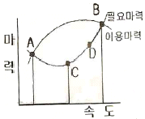
- A
- B
- C
- D
(정답률: 69%)
5. 비행기가 천음속 영역에서 비행할 때 한쪽날개의 충격 실속에 의한 가로불안정의 특별한 현상은 무엇인가?
- 나선 불안정 (spiral devergence)
- 날개 드롭 (wing drop)
- 턱 언더 (tuck under)
- 디프 실속(deep stall)
(정답률: 75%)
6. 2000m 의 고도에서 활공기가 최대 양항비 8.5 인 상태로 활공한다면 이 비행기가 도달할 수 있는 최대 수평거리는 얼마인가?
- 25500m
- 21300m
- 17000m
- 12300m
(정답률: 86%)
7. 헬리콥터는 수평 최대속도로 비행기와 같이 고속도로 비행할 수 없다. 그 이유에 대한 설명 중 가장 관계가 먼 내용은?
- 회전날개(Rotor Blades)의 강도상 문제 때문에
- 후퇴하는 깃의 날개 끝 ,실속 때문에
- 후퇴하는 깃 뿌리의 역풍범위가 커지기 때문에
- 전진하는 깃 끝의 충격실속 때문에
(정답률: 60%)
8. NACA 23012에서 날개골의 최대 두께는 얼마인가?
- 시위의 12%
- 시위의 15%
- 시위의 20%
- 시위의 30%
(정답률: 70%)
9. 형상항력에 대한 설명 중 가장 관계가 먼 내용은?
- 이상유체에는 나타나지 않는 항력이다.
- 공기가 점성을 가지기 때문에 생기는 항력이다.
- 날개골의 형태에 따라 다른 값을 가지는 항력이다
- 날개표면의 유도항력에 의해 발생한다.
(정답률: 54%)
10. 비행 중 항공기가 항력과 추력이 같으면 어떻게 되는가?
- 감속전진 비행한다.
- 가속전진 비행한다.
- 정지한다.
- 수평 등속도 비행을 한다.
(정답률: 88%)
11. 비행기의 무게가 7000kgf 이고, 큰 날개 면적이 60m2, CL max 가 1.56 일 때의 최소속도는 약 얼마인가? (단,공기의밀도 ρ= 1/8kgf.s2/m4이다.)
- 28.7m/s
- 34.6m/s
- 38.7m/s
- 41.6m/s
(정답률: 74%)
12. 다음 중 마하수(mach number) Ma를 옳게 표현한 것은?
- Ma=비행체속도/음속
- Ma=비행체속도/(음속)2
- Ma=(비행체속도)2/음속
- Ma=음속/비행체속도
(정답률: 75%)
13. 최근의 초음속기에서 옆놀이 커플링 현상을 막기 위해 가장 많이 사용하는 방법은?
- 벤트럴 핀(Ventral fin) 부착
- 볼택스 플랩(Vortex flap) 사용
- 실속 스트립(Stall strip) 사용
- 윙넷(Wingnet) 부착
(정답률: 67%)
14. 레이놀즈 수(Reynold's Number)에 대한 설명으로 가장 올바른 것은?
- 유체의 동압과 정압의 비이다.
- 관성력과 중력의 비이다.
- 관성력과 유체 탄성의 비이다.
- 관성력과 점성력의 비이다.
(정답률: 80%)
15. 프로펠러 항공기가 최대 항속거리로 비행할 수 있는 조건으로 가장 올바른 것은?
- (
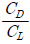
)최대 - (
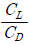
)최대 - (
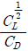
)최대 - (
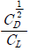
)최대
(정답률: 77%)
16. 다음 대기권 중에서 전파를 흡수, 반사하는 작용을 하여 통신에 영향을 끼치는 곳은?
- 성층권
- 열권
- 극외권
- 중간권
(정답률: 74%)
17. 비행속도가 증가함에 따라 최대 프로펠러 효율을 얻고자 한다. 이 때 깃 각의 변화는 어떻게 되어야 하는가?
- 증가한 후 감소해야 한다.
- 증가해야 한다.
- 감소한 후 증가해야 한다.
- 감소해야 한다.
(정답률: 49%)
18. 조종력은 힌지 모멘트 값에 따라 변화한다. 다음 중 힌지 모멘트 값에 영향을 주는 요소로 가장 거리가 먼 것은?
- 비행속도
- 양력계수
- 조종면의 폭
- 밀도
(정답률: 42%)
19. 헬리콥터 회전날개의 회전면과 원추 모서리와 이루는 각을 코닝 각(Coning Angle)이라 부르는 데, 이러한 코닝 각을 결정하는 가장 중요한 요소는?
- 항력과 원심력의 합력
- 양력과 추력의 합력
- 양력과 원심력의 합력
- 양력과 항력의 합력
(정답률: 81%)
20. 비행기의 방향 조종에서 방향키 부유각(floatangle)을 가장 올바르게 설명한 것은?
- 방향키를 밀었을 때 공기력에 의해 방향키가 변위 되는 각
- 방향키를 당겼을 때 공기력에 의해 방향키가 변위 되는 각
- 방향키를 고정했을 때 공기력에 의해 방향키가 변위 되는 각
- 방향키를 자유로 했을 때 공기력에 의해 방향키가 자유로이 변위되는 각
(정답률: 85%)
2과목: 항공기관
21. 기관 조절(engine trimming)을 하는 가장 큰 이유는?
- 정비를 편리하도록 하기 위해
- 비행의 안정성을 위해
- 기관 정격 추력을 유지하기 위해
- 이륙 추력을 크게 하기 위해
(정답률: 70%)
22. 가스터빈기관의 이상적인 기본 사이클은 무엇인가?
- Brayton cycle
- Regenerate cycle
- Otto cycle
- Diesel cycle
(정답률: 80%)
23. 가스터빈기관에서 배기 노즐의 주 목적은?
- 배기 가스의 속도를 증가시키기 위하여
- 최대 추력을 얻을 때 소음을 감소하기 위하여
- 난류를 얻기 위하여
- 배기 가스의 압력을 증가시키기 위하여
(정답률: 89%)
24. 가스터빈기관의 연소실 성능에 대한 설명으로 가장 올바른 것은?
- 연소효율은 고도가 높을 수록 좋아진다.
- 연소실 출구온도 분포는 일반적으로 안쪽 지름쪽이 바깥 지름쪽 보다 높은 것이 좋다.
- 연소실 출구에서의 전 앞력(Total pressure)을 압력손실이라 하며 보통 20% 정도이다.
- 고공 재 시동 가능 범위가 넓을 수록 좋다.
(정답률: 72%)
25. 터빈 깃의 내부를 중공으로 제작하여 차가운 공기가 지나가게 함으로서 터빈 깃을 냉각하는 방법으로 가장 올바른 것은?
- Film Cooling
- Convention cooling
- Impingement cooling
- Transpiration cooling
(정답률: 64%)
26. 항공기 왕복기관에서 직접연료분사장치의 주요 구성품이 아닌 것은?
- 연료분사 펌프
- 분사 노즐
- 주 조정 장치
- 주 공기 블리드
(정답률: 68%)
27. 항공기 왕복기관에서 크랭크축의 주요 3부분에 속하지 않는 것은?
- Main Journal
- Crank Pin
- Connecting Rod
- Crank Arm
(정답률: 66%)
28. 1 개 이상의 비행속도에서 최대의 효율을 가지게 하기 위하여 지상에서 깃각을 조정할 수 있는 프로펠러는?
- 고정 피치 프로펠러
- 조정(adjustable) 피치 프로펠러
- 가변(controllable) 피치 프로펠러
- 정속 피치 프로펠러
(정답률: 60%)
29. 프로펠러 깃 스테이션(station)의 용도로 가장 올바른 것은?
- 깃각(blade angle) 측정
- 프로펠러 장착과 장탈
- 깃 인덱싱(indexing)
- 프로펠러 성형
(정답률: 62%)
30. 내부 에너지와 유동 에너지의 합으로 정의되는 하나의 열역학 성질로서 중략 성질을 갖는 것은?
- 비열
- 열량
- 엔트로피
- 엔탈피(Enthalpy)
(정답률: 65%)
31. 마그네토(Magneto)의 브레이커 어셈블리에서 접촉은 일반적으로 어떤 재료로 되어 있는가?
- 은(silver)
- 구리(copper)
- 백금(Platinum) - 이리듐(Iridium) 합금
- 코발트(Cobalt)
(정답률: 78%)
32. 왕복기관에서 실린더의 압축비(ε)를 가장 올바르게 표현한 것은? (단, Vc : 연소실 체적, Vs : 행정 체적)
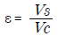
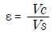
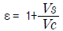
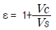
(정답률: 60%)
33. 다음의 가스터빈기관 중 배기소음이 가장 심한 기관은?
- 터보 제트 기관
- 터보 팬 기관
- 터보 프롭 기관
- 터보 샤프트 기관
(정답률: 85%)
34. 가스터빈기관에서 디퓨저의 주 목적은?
- 공기의 속도를 증가시킨다.
- 공기의 압력과 속도를 증가시킨다.
- 공기의 속도를 감소시키고 압력은 증가시킨다.
- 공기의 압력을 감소시킨다.
(정답률: 76%)
35. 왕복성형기관의 실린더 수가 9 개 라면 연소 페이즈각(Combustion Phase Angle)은 얼마인가?
- 40°
- 60°
- 80°
- 100°
(정답률: 35%)
36. 열역학에서 “밀폐계가 사이클을 수행할 때의 열 전달량은 이루어진 일과 정비례 관계를 가진다”라는 말로 표현되는 법칙은?
- 열역학 제1법칙
- 열역할 제2법칙
- 열역학 제3법칙
- 열역학 제4법칙
(정답률: 65%)
37. 민간 항공기용 연료로서 ASTM에서 규정된 성질을 가지고 있는 가스터빈기관용 연료는?
- JP-2
- JP-3
- AV-G 형
- A-1형
(정답률: 71%)
38. 항공기 왕복기관에서 가속장치의 가장 중요한 기능은?
- 드로틀이 갑자기 닫힐 때 순간적으로 혼합기를 희박하게 하여 엔진이 무리없이 가속되게 한다.
- 드로틀이 갑자기 열릴 때 순간적으로 혼합기를 농후하게 하여 엔진이 무리없이 가속되게 한다.
- 드로틀이 거의 닫히고 엔진이 천천히 작동될때 연료를 공급하여 가속되게 한다.
- 기관의 출력이 순항출력 이상의 높은 출력일때 농후혼합비를 만들어 주기 위해서 추가 연료를 공급하여 가속되게한다.
(정답률: 56%)
39. R-1650의 항공기 왕복기관에서 실린더 수가 14개이고 피스톤의 행정거리가 6inch 라면 피스톤의 면적은 약 몇 inch2 인가?
- 19.64
- 48.23
- 117.80
- 275.14
(정답률: 37%)
40. 왕복엔진에서 실린더의 배기밸브는 흡기밸브보다 과열되므로 밸브의 내부에 어떤 물질을 넣어서 냉각하는가?
- 합성오일
- 금속나트륨
- 수은
- 실리카겔
(정답률: 89%)
3과목: 항공기체
41. 원형 단면인 봉의 경우 비틀림에 의하여 단면에서 발생하는 비틀림각 Ө를 올바르게 나타낸 식은? (단, L : 봉의 길이, G : 전단탄성계수, R :반지름, J : 극관성 모멘트, T : 비틀림 모멘트)
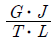
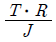
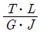
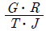
(정답률: 63%)
42. 지상 진동시험에서 외부 하중의 진동수와 고유 진동수가 같아질 때에는 상당히 큰 변위가 발생하는 데, 이것을 무엇이라 하는가?
- 동적응력
- 정적응력
- 공진
- 진폭
(정답률: 82%)
43. AA 알루미늄 규격에서 합금번호와 주 합금원소가 옳게 짝지어진 것은?
- 3XXX - 망간
- 5XXX - 규소
- 6XXX - 구리
- 7XXX - 구리
(정답률: 66%)
44. 카운터 성크 리벳(counter sunk rivet)이 주로 사용되는 곳은?
- 주로 항공기 내부의 주요 구조물의 연결에 사용된다.
- 구조물의 양쪽 면 접근이 불가능하거나 작업 공간이 좁아서 버킹바를 사용할 수 없는 곳에 사용된다.
- 리벳의 머리가 금속판의 속에 심어지기 때문에 주로 항공기 외피에 사용된다.
- 날개의 앞전에 제빙 부스를 장착하거나 기관 방화벽에 부품을 장착할 때 사용된다.
(정답률: 62%)
45. 너트(Nut)의 일반적인 특징에 대한 설명 중 가장 올바른 것은?
- 평 너트(Plain Hexagon Airframe Nut)는 인장하중을 받는 곳에 사용한다.
- 잼 너트(Hexagon Jam Nut)는 맨손으로 조일 수 있는 곳에서 조립부를 빈번하게 장탈 혹은 장착하는 데 적합하게 만들어져 있다.
- 나비 너트(Plain Wing Nut)는 평 너트, 세트 스크류 끝 부분의 나사가 있는 로드에 장착되어 고정하는 역할을 한다.
- 구조용 캐슬 너트는 홈이 없이 사용된다.
(정답률: 72%)
46. 고정 지지점(Fixed support)에 대한 설명 중 가장 올바른 것은?
- 수직 반력만 생긴다.
- 저항 회전모멘트 반력만 생긴다.
- 수직 및 수평반력 등 2개의 반력이 생긴다.
- 수직 및 수평반력과 동시에 저항 회전모멘트등 3개의 반력이 생긴다.
(정답률: 78%)
47. 날개(Wing)의 주요 구조 부재가 아닌 것은?
- 스파(spar)
- 리브(rib)
- 스킨(skin)
- 프레임(frame)
(정답률: 83%)
48. 알루미늄 판 두께가 0.⑤1inch 인 재료를 굴곡반경 0.125inch 가 되도록 90 ̊ 굴곡할 때 생기는 세트 백(SET BACK)은 얼마인가?
- 0.017inch
- 0.074inch
- 0.125inch
- 0.176inch
(정답률: 81%)
49. 가스용접시 역화의 원인으로 가장 거리가 먼 것은?
- 팁이 물체에 부딪혀 순간적으로 가스의 흐름이 멈출때
- 팁이 과열되었을 때
- 가스의 압력이 높을 때
- 팁의 연결이 불충분할 때
(정답률: 41%)
50. 용해된 이산화규소의 가는 가닥으로 만들어진 섬유로서 전기절연성이 뛰어나고 내수성, 내산성 등 화학적 내구성이 좋으며, 가격도 저렴하지만 다른 강화섬유에 비해 기계적 성질이 낮아 2차 구조물에 사용되는 섬유는?
- 카본섬유
- 유리섬유
- 아라미드섬유
- 보론섬유
(정답률: 56%)
51. 다음 중 항공기의 1차 조종면이 아닌 것은?
- 도움날개
- 승강키(elevator)
- 방향키(rudder)
- 스포일러(spoiler)
(정답률: 88%)
52. 두 종류의 이질 금속이 접촉하여 전해질로 연결되면 한쪽의 금속에 부식이 촉진되는 것은?
- 입자간 부식(intergranular corrosion)
- 점부식(pitting corrosion)
- 동전지 부식(galvanic cells corrosion)
- 찰과 부식(fretting corrosion)
(정답률: 72%)
53. 항공기용 윈드쉴드판넬(windshield panel)의 여압압력에 의한 파괴 강도는 내측판만으로 최대 여압실 압력의 최소 몇 배 이상의 강도를 가져야 하는가?
- 1 ~ 2배
- 3 ~ 4배
- 5 ~ 6배
- 7 ~ 10배
(정답률: 64%)
54. 엔진 마운트에 대한 설명으로 가장 올바른 것은?
- 엔진의 추력을 기체에 전달하는 구조물이다.
- 엔진과 기체를 차단하는 벽의 구조물이다.
- 엔진이나 엔진에 부수되는 보기 주위를 쉽게 접근할 수 있도록 장・탈착하는 덮개이다.
- 엔진을둘러싸고 있는 부분이다.
(정답률: 67%)
55. 대형 항공기에 주로 사용하는 브레이크 장치는?
- 싱글 디스크(Single Disk)식 브레이크
- 세그먼트 로터(Segment Rotor)식 브레이크
- 슈(shoe)식 브레이크
- 팽창 튜브(Expander tube)식 브레이크
(정답률: 76%)
56. 세미모노코크 구조에서 날개, 착륙장치 등의 장착부를 마련해 주는 역할도 하고, 동체가 비틀림에 의해변형 되는 것을 방지해 주는 부재는?
- BULKHEAD
- LONGERON
- STRINGER
- FRAME
(정답률: 74%)
57. 항공기의 무게와 평형에서 유효하중을 가장 올바르게 설명한 것은?
- 항공기에 인가된 최대무게이다.
- 항공기내의 고정위치에 실제로 장착되어 있는 하중이다.
- 총 무게에서 자기 무게를 뺀 무게이다.
- 항공기의 무게 중심이다.
(정답률: 80%)
58. V - n 선도에서의 n(load factor)을 옳게 표현한 것은? (단,L:양력, D:항력, T: 추력, W: 무게)
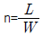
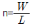
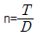
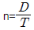
(정답률: 54%)
59. 항공기 볼트의 나사산(THREAD)은 일반적으로 Class 3 NF(American National Fine Pitch)가 사용된다. NF는 길이 1인치당 몇 개의 나사산(Thread)을 가지고 있는가?
- 10개
- 12개
- 14개
- 16개
(정답률: 50%)
60. 알루미늄 함금 튜브(6061 T)의 이중 플레어 방식으로 플레어 작업을 할 수 있는 튜브 지름의 치수범위로 가장 올바른 것은?
- 1/8 ~ 3/8 inch
- 3/8 ~ 5/8 inch
- 5/8 ~ 3/4 inch
- 1/4 ~ 3/4 inch
(정답률: 49%)
4과목: 항공장비
61. 다음 중 관성항법장치를 나타내는 용어는?
- INS
- GPS
- FMS
- DME
(정답률: 82%)
62. 교류와 직류의 겸용이 가능하며, 인가되는 전류의 형식에 구애됨이 없이 항상 일정한 방향으로 구동될 수 있는 전동기(motor)는?
- universal motor
- induction motor
- synchronous motor
- reversible motor
(정답률: 81%)
63. 비행 중에는 조종실 내의 운항 승무원 상호간에 통화를 하며, 지상에서는 Flight를 위하여 항공기가 Taxing 하는 동안 지상조업 요원과 조종실 내 운항 승무원 간에 통화하기 위한 시스템은?
- passenger address system
- cabin interphone system
- flight interphone system
- service interphone system
(정답률: 67%)
64. 항법등에서 꼬리 끝에 있는 등은 어떤 색깔인가?
- 적색등
- 녹색등
- 흰색등
- 황색등
(정답률: 66%)
65. 다음 중 탄성오차에 대한 설명으로 옳지 않은 것은?
- 백래쉬(Backlash)에 의한 오차이다.
- 온도변화에 의해서 탄성계수가 바뀔 때의 오차이다.
- 크리프(creep) 현상에 의한 오차이다.
- 재료의 피로현상에 의한 오차이다.
(정답률: 55%)
66. PITOT-STATIC 계통과 가장 관계가 먼 계기는?
- 속도계(Airspeed meter)
- 승강계(Rate-Of-Climb Indicator)
- 고도계(Alti meter)
- 가속도계(Accelero meter)
(정답률: 71%)
67. CSD(Constant Speed Drive)의 장동에 대한 설명으로 가장 올바른 것은?
- 기관의 회전수에 맞추어 발전기 축에 부하를 일정하게 한다.
- 기관의 회전수에 관계없이 항상 일정한 회전수를 발전기 축에 전달한다.
- 연료펌프의 회전수 및 압력을 일정하게 한다.
- 유압펌프의 회전수 및 압력을 일정하게 한다.
(정답률: 78%)
68. 위성통신장치에서 지상국 시스템의 송신계에 가장 적합한 증폭기는?
- 저잡음 증폭기
- 저출력 증폭기
- 고출력 증폭기
- 전자 냉각 증폭기
(정답률: 75%)
69. 전파의 이상현상과 가장 거리가 먼 것은?
- FADING(페이딩)
- MAGNETIC STORM(자기폭풍)
- DELLINGER(델린저)
- WHITE NOISE(백색잡음)
(정답률: 47%)
70. 연료 유량계의 종류가 아닌 것은?
- 차압식 유량계
- 베인식 유량계
- 부자식 유량계
- 동기 전동기식 유량계
(정답률: 45%)
71. 도체의 고유 저항 또는 비저항을 나타내는 단위는?
- ohm - mil/in2
- ohm - cir mil/in2
- ohm - mil/ft
- ohm - cir mil/ft
(정답률: 41%)
72. 그림의 교류회로에서 임피던스를 구한 값은?
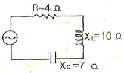
- 5Ω
- 7Ω
- 10Ω
- 17Ω
(정답률: 58%)
73. 다음 중 자장을 감지하여 그 방향으로 향하는 전기신호로 변환하는 장치는?
- 플럭스(FLUX) 밸브
- 수평의
- 콤파스 카드
- 루버 라인(LUBBER'S LINE)
(정답률: 65%)
74. 다음의 화재탐지장치 중 온도 상승을 바이메탈로 탐지하며, 일명 스폿형(Spot type)이라고 부르는 것은?
- 서멀스위치형 화재탐지기
- 서머커플형 화재탐지기
- 저항루프형 화재탐지기
- 광전자형 화재 탐지기
(정답률: 52%)
75. 교류발전기를 병렬운전에 들어가기 전에 반드시 일치시켜야 할 확인사항에 들지 않는 것은?
- 전압(voltage)
- 주파수(frequency)
- 토크(torque)
- 위상(phase)
(정답률: 61%)
76. 제빙부츠를 취급할 때에 주의해야 할 사랑으로 옳지 않은 것은?
- 부츠 위에서 연료 호스(Hose)를 끌지 않는다.
- 부츠 위에 공구나 정비에 필요한 공구를 놓지 않는다.
- 부츠를 저장하는 경우 그리스나 오일로 깨끗하게 닦은 다음 기름 종이로 덮어둔다.
- 부츠에 흠집이나 열화가 확인되면 가능한 빨리 수리하거나 표면을 다시 코팅한다.
(정답률: 71%)
77. 계기 착륙장치(INSTRUMENT LANDING SYSTEM)의 구성장치가 아닌 것은?
- 로컬라이저(Localizer)
- 글라이드 슬로프(Glide slope)
- 마커 비컨(Marker Beacon)
- 기상 레이다(Weather Radar)
(정답률: 85%)
78. 유압계통에서 레저버(reservoir)내에 있는 stand pipe의 주 역할은?
- 계통 내의 압력 유동을 감소시키는 역할을 한다.
- vent 역할을 한다.
- 비상시 작동유의 예비공급 역할을 한다.
- 탱크 내의 거품이 생기는 것을 방지하는 역할을 한다.
(정답률: 75%)
79. 항공기에서 사용되는 공기압 계통에 대한 설명 중 가장 관계가 먼 내용은?
- 대형 항공기에는 주로 유악계통에 대한 보조수단으로 사용한다.
- 소형 항공기에서는 브레이크장치, 플랩장동장치 등을 작동시키는데 사용한다.
- 적은 양으로 큰 힘을 얻을 수 있고, 깨끗하며 불연성(Non-inflammable)이다.
- 공기압의 재활용으로 귀환관이 필요하나 유압계통보다는 계통이 단순하다.
(정답률: 72%)
80. 항공기에 사용되는 니켈-카드뮴 축전지의 방전상태를 측정하는 장비로 가장 적합한 것은?
- 저항계(ohmmeter)
- 전압계(voltmeter)
- 와트미터(wattmeter)
- 전류계(ammeter)
(정답률: 58%)